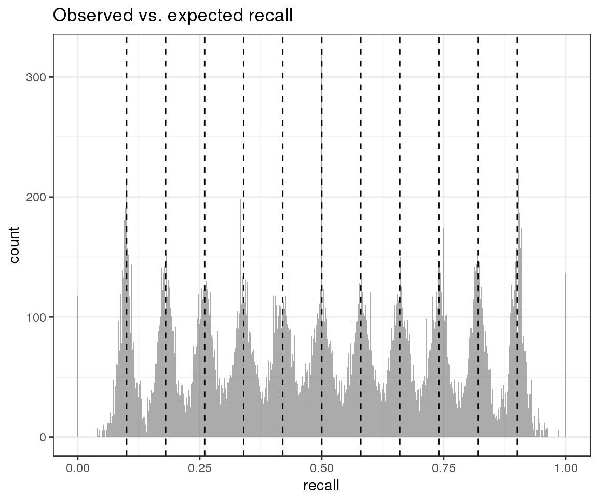
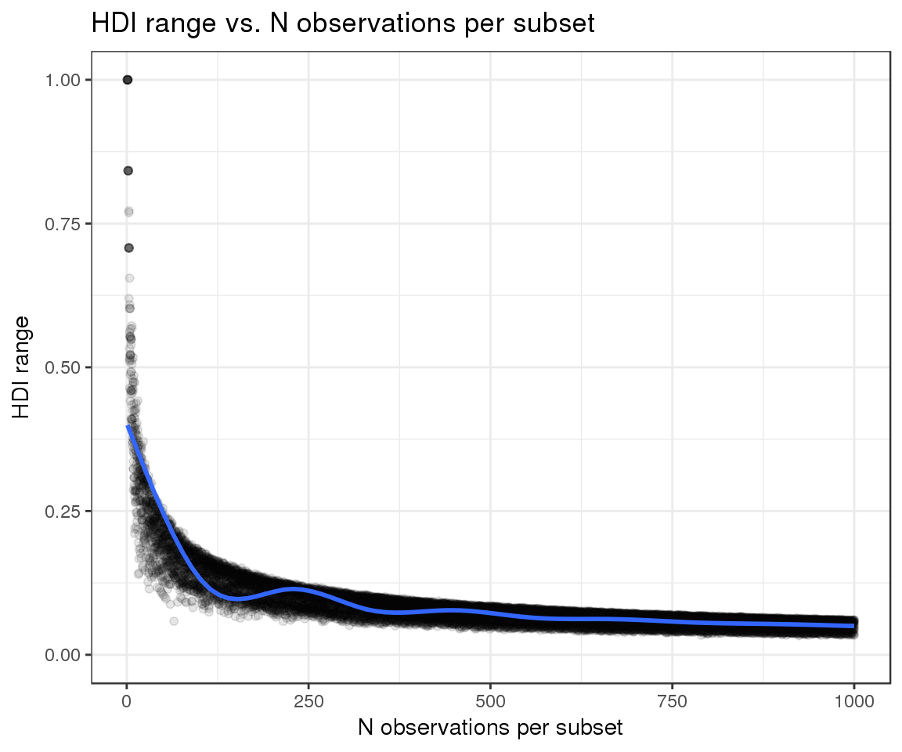
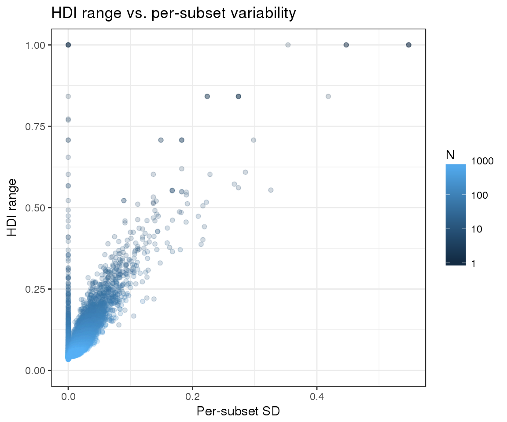

One way to evaluate the accuracy of our highest density intervals (HDIs) is to rely on simulated data. Under that scenario, we know what the true success rate is, and we can measure how often that value is captured by our HDI estimates. However, we do not want to rely on a simulation approach that is based solely on the model that we have used for estimation, since it might not be fully representative of real data.
Let us take recall measurements across \(r\) replicates as an example. For a subset with \(n\) total variants we can classify each variant into one of these 3 groups:
We can then define our true recall \(q\) as follows:
\(q = (n*q_1*x_1 + n*q_2*x_2 + n*q_3*x_3) / n\)
where \(n\): total number of variants in the subset; \(q_1\): probability of having variants in group 1; \(x_1\): recall in group 1 (will always be 1); \(q_2\): probability of having variants in group 2; \(x_2\): recall in group 2 (variable); \(q_3\): probability of having variants in group 3; \(x_3\): recall in group 3 (will always be 0).
From these parameters, we can simulate true positive counts in one sample by drawing from a multinomial distribution that attributes each of the \(n\) variants into one of the groups using the defined probabilities \(\{q_1, q_2, q_3\}\). We can next simulate replicates from this sample by performing random binomial draws from each group with recalls \(\{x_1, x_2, x_3\}\).
Note that the number of true positives for groups 1 and 3 will be fixed across replicates by definition, but we can still take advantage of variants in the group 2 to simulate replicate variability. As a result of this variability, our observed recall will differ slightly from the theoretical expectation \(q\).
happyCompare includes an R script to produce simulated data using the method described above. After simulating true positive counts, the script will call happyCompare::estimate_hdi() to estimate 95% HDIs, and will report the full output in the specified location. For example, the dataset from the present vignette was generated with the following parameters:
output="r5.params_1.csv"
Rscript --vanilla inst/R/simulate_data.R --q1 0.1 --q2 0.8 --q3 0.1 \
--x_from 0 --x_to 1 --x_by 0.1 --r 5 --n_from 1 --n_to 1000 --n_by 1 \
--output_csv $output --sample_size 100000Note that for the purpose of the script \(x_2\) has been renamed to \(x\) since it’s the only value of \(\{x_1, x_2, x_3\}\) that varies.
Let’s first import the simulated dataset:
sim_data <- readr::read_csv(file = "~/workspace/git/happyTestData/simulations/r5.params_1.csv")## Parsed with column specification:
## cols(
## sample_id = col_character(),
## subset_id = col_character(),
## expected_p = col_double(),
## replicate_id = col_character(),
## successes = col_double(),
## totals = col_integer(),
## mu = col_double(),
## sigma = col_double(),
## alpha0 = col_double(),
## beta0 = col_double(),
## alpha1 = col_double(),
## beta1 = col_double(),
## lower = col_double(),
## observed_p = col_double(),
## estimated_p = col_double(),
## upper = col_double(),
## hdi_range = col_double()
## )And inspect the distribution of observed recall (gray) in the context of our expectations about theoretical recall (black):
ggplot() +
geom_histogram(aes(x = sim_data$observed_p), alpha = 0.5, lwd = 1, bins = 1000) +
geom_vline(xintercept = sim_data$expected_p, lwd = 0.5, lty = 2, color = "black") +
ggtitle("Observed vs. expected recall") +
xlab("recall")
From this plot we can conclude that our simulation strategy has succeeded in introducing replicate variability. We can next move on to evaluate the accuracy of our HDI estimates.
Since we have calculated 95% HDIs, we expect that our HDIs include the true level of recall in at least 95% of the subsets. We can see that this is indeed the case:
sim_data %>%
filter(replicate_id == ".aggregate") %>%
mutate(accurate_hdi = (lower <= expected_p & expected_p <= upper)) %>%
summarise(frac_accurate_hdi = mean(accurate_hdi),
N = n()) %>%
knitr::kable()| frac_accurate_hdi | N |
|---|---|
| 0.9813636 | 11000 |
Given that we have simulated replicates, we can also assess how often our HDIs contain all of the per-replicate observed recalls. Again, we would expect this to be true for 95% of the cases, as failure to do so would suggest that our estimates are too conservative and fail to capture the observed variability. We can see that the results match our expectations:
merge(
# replicates
sim_data %>% filter(replicate_id != ".aggregate") %>% select(subset_id, observed_p),
# aggregate
sim_data %>% filter(replicate_id == ".aggregate") %>% select(subset_id, lower, upper),
by = "subset_id"
) %>%
mutate(per_subset_accurate_hdi = ifelse(lower <= observed_p & observed_p <= upper, TRUE, FALSE)) %>%
group_by(subset_id) %>%
summarise(accurate_hdi = all(per_subset_accurate_hdi) == TRUE) %>%
ungroup() %>%
summarise(frac_accurate_hdi = mean(accurate_hdi),
N = n()) %>%
knitr::kable()| frac_accurate_hdi | N |
|---|---|
| 0.949 | 11000 |
Finally, we can evaluate whether the width of our HDIs responds as expected to the two variables that we are attempting to model:
We can see that the observed trends match the expected ones:
sim_data %>%
filter(replicate_id == ".aggregate") %>%
ggplot(aes(x = totals, y = hdi_range)) +
geom_point(color = "black", alpha = 0.1) +
geom_smooth() +
xlab("N observations per subset") +
ylab("HDI range") +
ylim(0, 1) +
ggtitle("HDI range vs. N observations per subset")## `geom_smooth()` using method = 'gam'
sim_data %>%
filter(replicate_id == ".aggregate") %>%
rename(N = totals) %>%
ggplot(aes(x = sigma, y = hdi_range, color = N)) +
geom_point(alpha = 0.2) +
scale_color_continuous(trans = "log", breaks = c(1, 10, 100, 1000, 10000, 100000, 1000000)) +
ylim(0, 1) +
xlab("Per-subset SD") +
ylab("HDI range") +
ggtitle("HDI range vs. per-subset variability")